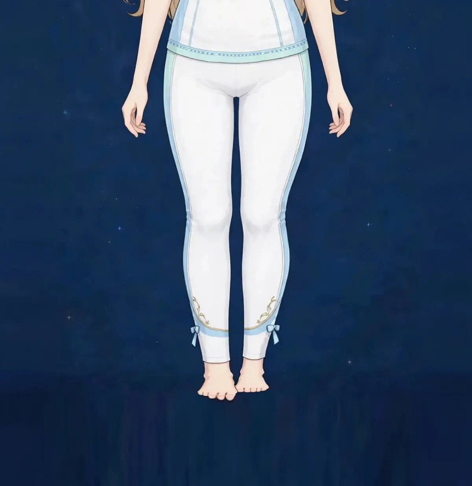

梅田で膝上のお肉ケア｜美容整体で太ももと膝まわりのラインにアプローチ｜ステラポラリス 梅田・女性専用美容・見た目
膝のお皿の上に、ぽこっとお肉が乗って見える。スカートの丈でちょうど気になる場所——膝上のお肉は、太もも全体とは少し違う理由で目立つ、細部の悩みです。膝まわりの仕組みから読み解いていきます。
膝上にお肉が乗って見える理由
膝上のお肉は、太ももの前側の筋肉の下部と、その上の脂肪・皮膚の重なりとして表れます。太ももの前側の筋肉は膝のすぐ上で細くなって腱に移行するため、その境目の上に組織が集まると、段差のように見えます。
この見え方は、太ももの筋肉の使い方と、膝の向き、むくみの状態に影響されます。特に、太ももの前側が張っている方や、膝が内側へ寄るラインの方では目立ちやすくなります。図1で、膝まわりの位置関係を確認してみてください。太もも全体の内容は「太ももの張り・たるみ」のページでも扱っています。
膝上の見え方は、スカートの丈や、座る・立つの姿勢でも変わります。気になる方は、立った状態と椅子に座った状態の両方で確認してみてください。また、膝上は自分では触れやすい場所でもあるため、日々のほぐしケアを習慣にしやすい部分です。小さな部位だからこそ、継続の積み重ねが表れやすい場所でもあります。
こんなサインはありませんか？ — 膝上のお肉のチェックリスト
- 膝のお皿の上にお肉が乗って見える
- スカートやショートパンツで気になる
- 太ももの前側の張りも気になる
- 膝まわりにむくみを感じる
- 階段の上り下りで膝上が疲れる
- 膝の向きが内側を向いている気がする
- 脚全体のラインも一緒に気になる
- 座ると膝上が広がって見える
当てはまる項目が多いほど、太ももの使い方や膝まわりの巡りに偏りが集まっている可能性があります。次の「要因」と見比べて、自分のパターンを確かめてみてください。
膝上が目立ちやすい要因
- 太ももの前側の張り：前側の筋肉が張ると、その下部である膝上も盛り上がって見えます。前張りのある方は、膝上もセットで目立つ傾向があります。
- 膝の向き：膝が内側へ寄るラインでは、膝まわりの組織の寄り方が変わります。X脚やXO脚の要素がある方は、この影響を受けます。
- むくみ：膝まわりは水分がたまりやすい場所のひとつです。夕方に目立つ場合は、むくみの影響が重なっています。
- お尻の働き不足：お尻が使われにくい歩き方では、太ももの前側、特に膝に近い部分が代わりに働きます。負担の集まる場所が、そのまま見え方になります。
- 座り姿勢の長さ：膝を曲げたまま座る時間が長いと、膝まわりの巡りは滞ります。デスクワークの方に多い要因です。
- 年齢によるハリの変化：膝上の皮膚や脂肪のハリは年齢とともに変わり、重なりは目立ちやすくなります。使い方の見直しで印象は変わります。
太ももの前側の筋肉（大腿四頭筋）の中でも、膝のお皿に近い部分、特に内側の筋肉は、膝を最後まで伸ばし切るときに働きます。ところが日常では、座る・立つ・歩くといった動作の多くが膝を中間の角度で使う動きで、伸ばし切る場面は意外と多くありません。この部分の出番が少ない状態が続くと、膝まわりを支える力が落ち、太ももの下部の組織の重なりが膝上の段差として目立ちやすくなります。階段を下りるときに膝まわりが頼りなく感じる方は、この使い方の偏りが出ているサインです。
図1｜膝上と太ももの位置関係

東洋医学から見た考え方
東洋医学では、膝まわりには胃経や脾経、胆経など複数の経絡が集まるとされ、膝の上部には梁丘や血海といったツボが位置します。膝は脚の曲げ伸ばしの要として、昔から重視されてきた場所です。
膝上の見立てでは、太ももの前側の張りと、内側の巡りの両方を眺めます。施術では、太もも全体をほぐしながら、膝まわりにも丁寧に触れる進め方を取ります。
代表的なツボ
膝上のケアでよく挙げられるツボを紹介します。膝の関節そのものを強く押すことは避け、筋肉の部分にやさしく触れてください。
図2｜膝上で見たいポイント
おすすめ施術
美容整体・オイルマッサージ
施術では、まず太もも全体の張りをオイルマッサージでほぐし、特に前側と膝まわりに丁寧に触れながら、巡りを助けていきます。そのうえで美容整体で、膝の向きやお尻の働きといった、負担の集まり方の背景を整えていきます。
膝上のラインが整って見えるようアプローチするには、その場所のケアだけでなく、太ももの使い方の偏りを直すことが必要です。歩き方も一緒に確認し、お尻を使う感覚をお伝えします。
むくみが強い日は巡りのケアに寄せるなど、当日の状態で配分を調整します。美脚のページとあわせた、脚全体の組み立ても可能です。
自宅でできるセルフケア
膝上のセルフケアは「ほぐす・巡りを助ける・お尻を使う」の組み合わせが基本です。膝に痛みがある場合は無理をせず中止し、続く場合は医療機関にご相談ください。
- 1．膝上の手のひらほぐしお風呂上がりに、膝の上から太ももの中ほどまで、手のひらでなで上げるようにほぐします。境目の段差を意識して行います。
- 2．お尻を使う橋のポーズ仰向けでお尻を持ち上げる動きを10回。太ももの前側の負担を分散させる、お尻の働きを取り戻す練習です。
- 3．膝の曲げ伸ばし椅子に座って膝をゆっくり伸ばしたり曲げたりを10回。膝まわりの巡りを助け、固まりを防ぎます。
- 4．階段の使い方の意識階段では、お尻と太ももの後ろ側を使う意識で上ります。前側ばかりに頼らない使い方が、膝上の負担を減らします。
- 5．椅子に座って行う膝伸ばし運動椅子に深く腰掛け、背筋を伸ばして片脚の膝をゆっくり伸ばしていきます。伸ばし切る手前でつま先を自分の方へ向け、太ももの前側、特に膝に近い部分に力が入るのを感じながら3秒保ち、ゆっくり元の位置へ戻します。左右それぞれ10回を1セットとして、2セットが目安です。反動をつけて脚を振り上げるような動きは避け、呼吸を止めずに丁寧に行ってください。膝に痛みがある場合は、この運動は行わないでください。
図3｜太ももの後ろ側から見る膝まわり

場面別の注意
スカートやショートパンツの日
膝が見える服の日は、出かける前に膝まわりのほぐしケアを。むくみが引いた状態では、見え方も変わります。
デスクワークの日
膝を曲げ続ける姿勢は巡りを滞らせます。時々膝を伸ばして、足首を動かすリセットを挟んでください。
階段が多い日
前側に負担が集まる日は、帰宅後に太もも全体のほぐしケアを。お尻を使う意識で上ることも、その日の対策になります。
受診の目安
次のような場合は、サロンでのケアの前に医療機関への受診をおすすめします。
- 膝に痛みがあり、腫れや熱感を伴う
- 膝が不安定で、曲げ伸ばしがしにくい
- 膝に水がたまっていると言われたことがある
- しびれや力の入りにくさがある
- 転倒やけがのあとから痛みが出てきた
当店は医療機関ではなく、診断は行いません。迷うときは、まずかかりつけの医療機関にご相談ください。
よくある質問
Q．膝上のお肉はなくなりますか？
組織そのものをなくすことをうたう施術ではありません。太ももの張りや巡りが整うことで、境目の段差が目立ちにくく、ラインがすっきり見えるようアプローチする内容です。
Q．太もものページと何が違いますか？
「太ももの張り・たるみ」は太もも全体、こちらは膝上に絞った内容です。気になる場所が膝上に集中している場合はこちら、全体なら太もものページが合います。
Q．膝に痛みがあるときも受けられますか？
膝の関節に痛みや腫れがある場合は、その部位への施術は行いません。まず整形外科で状態を確認してください。痛みのない範囲での太もものケアは可能です。
Q．運動はしたほうがいいですか？
お尻を使う軽い動きは、太ももの前側の負担を分散させる助けになります。痛みの出る運動は避け、ページ内のセルフケア程度から始めてください。
関連するお悩みページ
関連する経絡ページ
ご予約
ステラポラリス（大阪・梅田／女性専用）｜美容整体・オイルマッサージ 90分 10,000円｜月〜土 17:00〜22:00・完全予約制
ご予約はLINE公式アカウントで受け付けています。希望の日時と、気になる場所を送ってください。